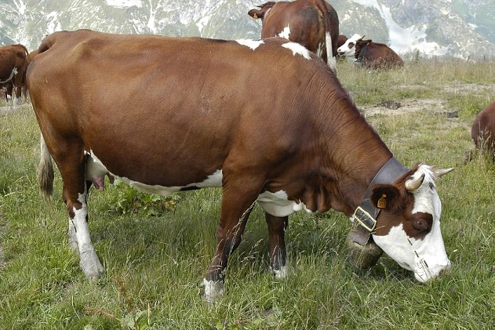

Поняття терміну «м'ясо» та його класифікація
Що таке м’ясо?
М’ясо — м'язові тканини різноманітних тварин, що вживаються у їжу. Важливий продукт харчування, головне джерело тваринного білка та одне з головних джерел білка взагалі. М'ясо наземних ссавців містить усі необхідні для людини речовини.
Переважна складова частина м'яса - м'язова тканина , до складу якої входять: волога (73-77%), білки (18-21%), ліпіди (1-3%), екстрактивні речовини (1,7-2% азотистих, 0, 9-1,2% безазотистих), мінеральні речовини (0,8-1,0%).
Крім м'язової тканини до складу м'яса входять сполучна , жирова і невелика кількість нервової тканини .
Поживна цінність м’яса
Поживна цінність м'яса обумовлена тим, що в його склад входять білки, які містять незамінні амінокислоти ( валін , лейцин , ізолейцин , лізин , метіонін , треонін , триптофан , фенілаланін ), і ліпідами, до складу яких входять незамінні поліненасичені жирні кислоти . З м'ясом надходять в організм людини мікроелементи і вітаміни . Екстрактивні речовини м'яса поліпшують смак їжі, збуджують апетит , посилюють секрецію травних залоз.
Залежно від особливостей виду м'яса, хімічний склад і властивості розрізняються:
- Свинина має більш ніжну консистенцію, підвищений вміст жирової тканини, специфічний приємний аромат і смак. Завдяки цьому промислове значення свинини визначається вмістом як м'язової, так і жирової тканини.
- Яловичина представлена більш грубими м'язовими волокнами, має яскравий колір, містить менше екстрактивних речовин, тугоплавкий жир; технологічне значення яловичини полягає в наявності водо- та солерозчинних білків.
- Ягнята - смак їх м'яса (як і у телят) залежить від того, чим їх годували. Ягнята молочні - це ті ягнята, яких годують молоком до 6 місяців. М'ясо у таких ягнят має ніжний смак, світло-рожевого кольору з білим жирком.
- Козлятина – ( м’ясні породи ) м’ясо має неймовірно ніжний смак і дуже приємний запах, який трохи нагадує телятину.
Тварини різних порід мають значні відмінності як по живій масі, так і за якістю м'яса.
М'ясні породи великої рогатої худоби мають добре розвинені мускульну і жирову тканини; таке м'ясо більш соковите, ніжнеі смачне.
Для м'яса, отриманого від молочних і м'ясо-молочних порід, характерно підвищений вміст кісткової і сполучної тканини, менша кількість внутрішньом'язового жиру, гірші органолептичні показники. Основні показники якості (рівень pH м'яса, ніжність, ступінь розвитку морфологічних елементів м'язової тканини, характер автоліза ) передаються у тварин в спадок.
Стать тварин, проведення кастрації впливає як на швидкість росту і ефективність засвоєння корму тваринами, так і на вихід і якість м'яса. Статеві відмінності в м'ясі молодих тварин менш виражені; з віком у м'ясі самців в порівнянні з м'ясом самок збільшується вміст вологи при одночасному зниженні вмісту білка і жиру. Одночасно в м'ясі бичків зростає частка сполучної тканини, з'являється темний колір. Кастровані тварини розвиваються повільніше, але м'ясо, отримане від них, має характерний малюнок «мраморності».
Для м'яса кнурів ( свиней ) і поросних маток властивий специфічний небажаний запах. М'ясо самок має тонковолокнисту будову м'язових волокон і більш світле забарвлення.
З віком тварини м'ясо стає грубше за рахунок потовщення м'язових волокон, збільшення частки еластинових волокон в сполучній тканині і зміцнення колагенових волокон . Змінюється хімічний склад м'яса: підвищується вміст жиру, зменшується кількість води.
У віці від 12 до 18 місяців співвідношення основних компонентів м'яса ВРХ ( велика рогата худоба ) найбільш сприятливо для його якості.
У свиней оптимальні якісні характеристики формуються в основному до 8 місяців. Вплив статі тварини і наявність кастрації на якість м'яса з віком збільшується.
З метою забезпечення відносної ідентичності в якісних показниках використовуваного в ковбасному виробництві сировини велику рогату худобу при забої поділяють в залежності від віку тварин на дві групи: тварини старше 3 років (м'ясодорослої худоби) і від З місяців до 3 років (м'ясо молодих тварин).
Різновиди м’яса
- М'ясо домашніх ссавців:
- Яловичина
- Баранина
- Свинина
- Конина
- Козятина
- Верблюжатина
- М'ясо дичини:
- Яловичина : бізон
- Собачатина : лисиця , вовк
- Кошатина : лев , тигр
- Конина : зебра
- Гризуни : заєць ,кріль , пищуха , білка , бабак , дикобраз
- Сумчасті : кенгуру , опосум
- Примати : горила , орангутанг , шимпанзе , мавпа , людина (канібалізм)
- Копитні : олень , лось , антилопа , жираф , носоріг і ін.
- Птахи : курятина , качатина , гусятина , індичатина , дичина ( голуб , перепел , фазан , куріпка, вальдшнеп ) і ін.
- Плазуни : черепахи , ящірки , змії , ігуана , крокодил , алігатор .
- Земноводні : жаба , саламандра.
Класифікація за напрямками продуктивності
За класифікацією порід ВРХ за напрямками продуктивності розрізняють:
-
молочні: у корів молочного напряму добре розвинена молочна залоза (вим'я), грудна клітина з косо поставленими і широко розставленими ребрами. Середня частина тулуба довга, широка, глибока, що сприяє розвитку і посиленій діяльності органів травлення (за добу корова з'їдає 70-100 кг корму);Голшти́нська або голштинсько-фризька порода — молочна порода великої рогатої худоби. Є найбільш поширеною породою молочної худоби у світ
-
м'ясо-молочні: Абонданс (фр. Abondance) — порода великої рогатої худоби, виведена у Франції. Посідає четверте місце за кількістю поголів'я серед порід великої рогатої худоби Франції. Молочно - м’ясна порода.
-
молочно-м'ясні: Симентальська порода (нім. Simmental — Симентальська долина) — порода великої рогатої худоби молочно-м'ясного напрямку.
 -
м'ясні: для тварин м'ясного напряму характерна скороспілість, що супроводжується раннім костенінням хрящів. Унаслідок цього у них укорочені ноги, шия, тулуб, добре розвинена м'язова тканина. Герефордська - порода великої рогатої худоби, порода м'ясного напряму. Виведена в Англії, в графстві Герефордшир, у XVIII столітті шляхом відбору/підбору місцевої худоби.
-
робочі: Амріт Махал – порода великої рогатої худоби виведена в Індії. Стверджується, що вони могли маневрувати маршем у 100 миль за 2,5 дня.
Мармуровість м’яса та стейки
Мармурове м'ясо
Мармурове м'ясо — м'ясо ссавців, зазвичай червоне, яке містить різні кількості внутрішньо- м’язового жиру, надаючи йому вигляд, що нагадує мармуровий візерунок. Найчастіше цей термін використовується для яловичини, але також може бути використаний для свинини (порода Токіо-Ікс) та конини (м'ясо якутського коня). Телятина мало схильна до утворення мармуровості, оскільки в молодої рогатої худоби спочатку розвивається підшкірний жир, жир навколо нирок, серця, жир у тазовій області. У другу чергу утворюється міжм’язовий жир, і тільки в останню внутрішньо-м’язовий. Мармурове м'ясо є делікатесом і ціни на нього часом досягають до 799 доларів за кілограм[1].
Мармурові стейки - абсолютно винятковий в світі м'яса продукт, високо цінується гурманами по всій земній кулі. Що ж таке мармурова яловичина?
Мармуровість м'яса визначається жировими прошарками, розташованими в шматку м'яса і м'язових волокнах. Високоякісний стейк відрізняє висока мармуровість, в той час як пісний відруб - навпаки, мала. Жир повинен бути чистого білого кольору, і розподілений рівномірно по всьому стейку! Буде помилково заявляти про високу мармуровість стейка, тільки виходячи з присутності великого шматка жиру збоку.
Найбільш мармурові стейки розташовані в спинній частині тварини, м'язи якої отримують мінімальне навантаження протягом його життя, якщо порівнювати, наприклад, з ногами або плечима. Всі калорії, яким багатий раціон бичка, накопичуються саме тут.
При приготуванні мармурової яловичини жир всередині розтоплюється, роблячи м'ясо ніжним і ароматним. Впізнавану текстуру високоякісного стейка і його незабутній смак забезпечують саме ці жирові прошарки. Без мармуровості наш стейк вийшов би сухим. Втім, і при високій мармуровості, важливо не перепекти м'ясо, щоб зберегти його соковитість. Кращий спосіб приготувати стейк, про який ми часто говоримо - приготування на розігрітій чавунній сковороді. Ще один метод, який нам до душі - це швидка прожарка на високій температурі і подальше доведення до бажаного ступеня готовності в розігрітій духовці.
У США виділяють 5 ступенів мармуровості м’яса Прайм, Чойс, Селект, Стандарт, Коммершн. Для смаження стейків використовують лише перші три рівня. Найдорожчий і якісніший з них Прайм.
Основні види стейків
Стейк (англ. steak; від давньо-скандинавського слова зі значенням «смажити») — якісно приготований товстий шматок м'яса, вирізаний з туші тварини (як правило, яловичини) поперек волокон.
Рибай
Це найпопулярніший стейк в світі. Він вирізається з реберної частини. Смужку жиру, яка пронизує весь шматок, називають еye (око). Товщина такого стейка зазвичай досягає 6 см, а вага доходить до 800 гр.
Стриплойн
Готується з філейного краю (між реберною частиною і вирізкою). Цей стейк товщиною 3-8 см може важити 250-900 гр. і відрізняється насиченим смаком.
Тендерлойн
Його ще називають філе міньйон. Це яловича вирізка. Невеликі шматки вирізаються з тонкого краю. В основному, з них готують медальйони. Смак м'яса нейтральний, тому до нього обов'язкові соуси.
Степені прожарки
Як правильно вибрати і визначити ступінь прожарювання стейка?
Мармурову яловичину (а так само телятину, баранину,качку і деякі інші види м'яса) не обов'язково прожарювати повністю. Слабка прожарка зберігає в м'ясі вологу і забезпечує соковитість. Ідеальний результат - це коли ви одночасно прогріли волокна, щоб вони стали м'якими і ніжним, але залишили максимум вологи в м'ясі, щоб зберегти соковитість страви. Розрізняють 5 класичних ступенів підсмажування, з яких найбільш поширеними є Medium Rare, Medium і Medium Well.
Вони відрізняються тим, до якої температури доводиться м'ясо в серцевині шматка. Температура стейка в залежності від ступеня прожарювання наступна: 50 ° C - Rare, 55 ° C - Medium Rare, 60 ° C - Medium, 65 ° C - Medium Well, 70 ° C - Well Done. Мої улюблені ступеня - Medium Rare і Medium, але важливо розуміти, що до різних шматків м'яса потрібен різний підхід. Більш жирні стейки прийнято готувати довше, а пісні - навпаки, рекомендується «не дожарювати».
Дозрівання, ферментація м’яса
Витримка яловичини (також дозрівання, ферментація) - підготовка м'яса з використанням початкових стадій автолиза перед його температурною обробкою, частіше застосовується при приготуванні стейків .
Виділяють чотири типи витримки м'яса:
- суха;
- волога;
- комбінована;
- хімічна.
Суха витримка
Витримка (дозрівання) м'яса в туші або шматками в певних умовах. Процес необхідно проводити при вологості 75% і температурі від 1 до 4 ° C (34-40 ° F).
Основною метою витримки яловичини є руйнування м'язових волокон і посилення природного смаку м'яса без процесу маринування, що додає м'ясу смак маринаду.
Це відбувається завдяки ферментативним біохімічним реакціям, в результаті яких м'язові волокна руйнуються. Процес спрямований на випаровування вологи і руйнування ензимів, що містяться в м'ясі відразу після забою тварини.
Процесу витримки сприяють також деякі види грибків, що поселяються при цьому процесі на поверхні м'яса. Ці грибки доповнюють м'ясо ферментами, роблячи його більш соковитим і ароматним. Перед приготуванням грибковий шар зрізається з м'яса.
Тривалість процесу дозрівання м'яса залежить від температури зберігання і становить від 15 до 28 діб. У ресторанах найчастіше зустрічається м'ясо 21-денної витримки, хоча в країнах, де стейк став практично національним блюдом, можна замовити м'ясо 30-, 40-, 60- і 90-денний витримки.
Відомий на сьогодні найтриваліший термін витримки яловичини становить 420 днів, але, на думку експертів, це м'ясо вже більше підходить як інградієнт для страв, а не окрему страву, оскільки має надто різкий смак і аромат.
Волога витримка
При вологій витримці яловичину поміщають у вакуумну упаковку. Це найбільш поширений спосіб витримки м'яса в даний час, так як у вакуумі процес проходить швидше і вимагає менших витрат і часу (від декількох днів до тижня).
Існує думка, що м'ясо після вологої витримки більш соковите, так як в ньому зберігається більше вологи.
Комбінована витримка
Технологія відносно нова і поєднує в собі плюси обох вищеописаних способів витримки м'яса. Полягає у використанні спеціальних вакуумних пакетів, які працюють за принципом мембрани, випускаючи вологу з пакета назовні і перешкоджаючи доступу повітря і бактерій до продукту. В результаті такої витримки м'ясо отримує корочку і втрачає вологу як при сухій витримці, при цьому для його зберігання не потрібно спеціальне обладнання і персонал, досить холодильників і спеціальних вакуумних пакетів.
Хімічна ферментація у газомодефікованому середовищі
Цю технологію застосовують великі м'ясокомбінати при виробництві м'ясних напівфабрикатів в промислових масштабах. Нічого спільного з традиційною ферментацією даний спосіб не має. Відруби поміщають або в камери зі спеціальними газами, які створюють штучний ефект ферментації, або запаюють у вакуумну упаковку із газомодефікованим середовищем, при цьому м'ясні волокна розм'якшуються примусово.